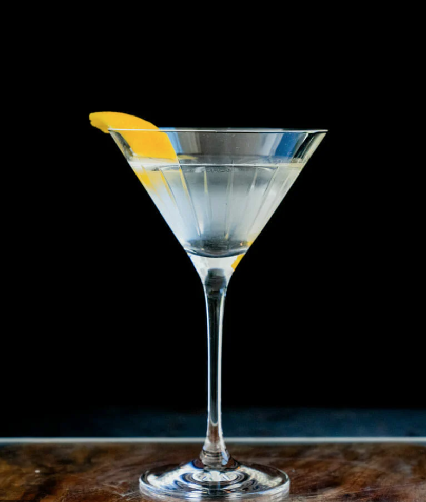

Martini

Description
Are you feeling in a spy-ish mood? This classic drink made famous by the agent 007 has many variations however a classic dirty martini is a must try.
Althrough it can be a jarring experience the first time, don't be discouraged by the olvies in the drink, they will give it the spunk you never knew you needed!
Ingredients:
- Cocktail glass (chilled)
- Mixing glass
- Strainer
- Olives
- Olive brine
- Vodka
- Dry vermouth
Steps:
- Add ice to your mixing glass
- Into the mixing glass pour 2 1/2 oz vodka
- Add 1/2 oz of dry vermouth
- Add 1/2 oz olive brine
- Stir in the glass until the drink is chilled
- Strain and serve into your cocktail glass
- Garnish with an olive